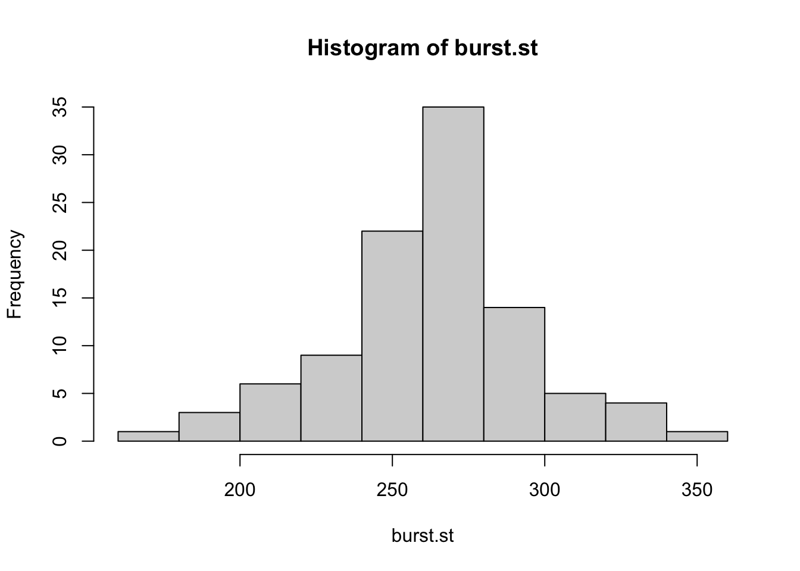
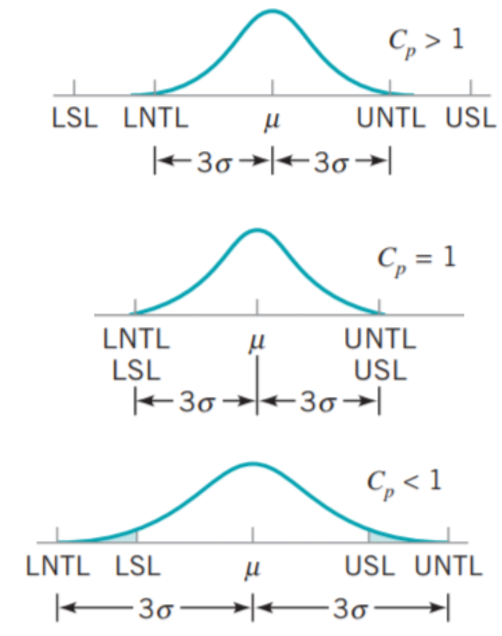
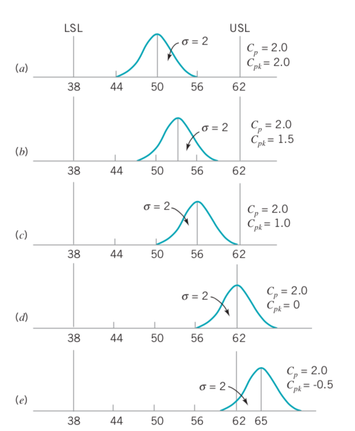
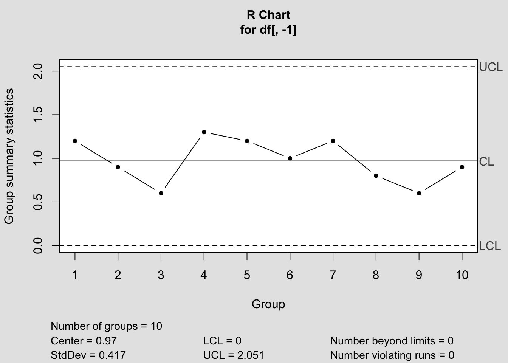
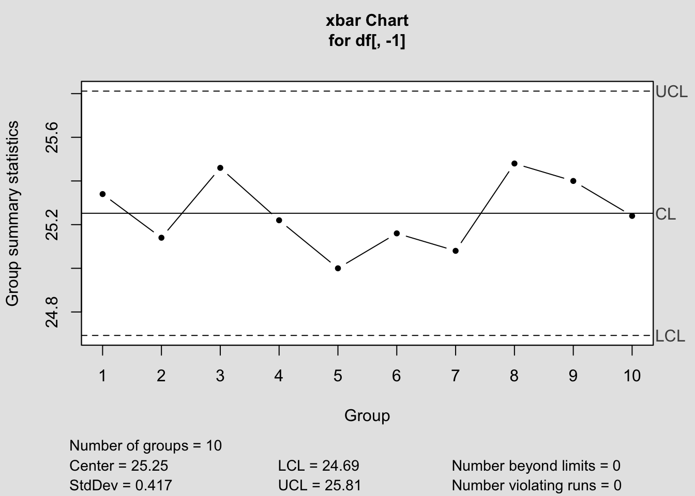
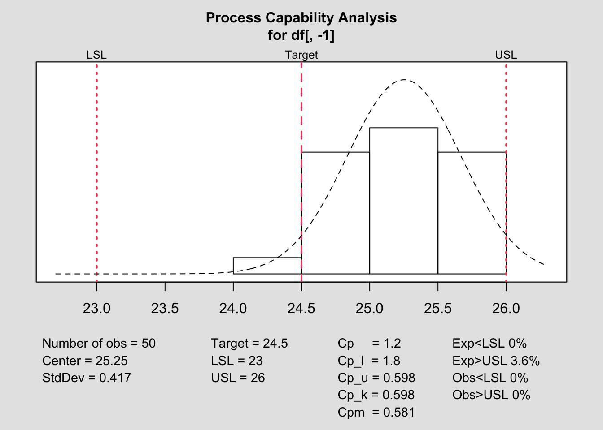

Bölüm 10 Proses Yeterlilik Analizi
10.1 Neden PCA
Proses yeterlilik analizi (Process Capability Analysis(PCA)) uygulanmasının nedenleri aşağıdaki gibi sıralanabilir.
- Prosesin spesifikasyonları karşılama durumunun değerlendirilmesi
- Değişkenliğin azaltılmasında sürekliliği sağlamak
- Prosesteki sürekli iyileşmenin takibi
- Ürünlerin özdeşliğinin araştırılması
- İyileştirilmesi gereken proses veya kalite karakteristiğinin belirlenmesi
- Müşterinin sesini duyarak gereksinimlerin karşılanma durumunu incelemek
- Tedarikçi, makine veya proses seçimine karar verilmesi
Proses yeterlilik analizinden elde edilen veriler aşağıdaki amaçlar için kullanılabilir;
- Prosesin toleransları karşılama miktarının öngörülmesi
- Sorumlu kişileri proses seçimi ve modifikasyonu konularında yönlendirmesi
- Örneklem alma sıklığının belirlenmesi
- Tedarikçi seçimi
- Proses değişkenliğinin azaltılması
Bu bakımdan kullanılabilecek üç temel yöntem;
- Histogramlar veya olasılık grafikleri
- Kontrol diyagramları
- Deney tasarımı
10.2 Histogramlar veya olasılık grafikleri
Histogramın güvenilir bir PCA aracı olabilmesi için en az 100 ve üzeri gözleme ihtiyaç duyulmaktadır.
Örnek1: 100 adet cam şişenin patlama gücüne ait değerler burst.st değişkeninde yer almaktadır. Prosesin yeterliliği hakkında ne söylenebilir?
## [1] 168## [1] 360.1 Histogram incelendiğinde patlama gücü değişkeninin yaklaşık olarak normal dağıldığı söylenebilir. Böylece, bu proseste üretilen şişelerin yaklaşık %99.73’ünün 168 ile 360 (psi) arasında olacağını tahmin edebiliriz. Burada proses yeterliliğinin spesifikasyonlardan bağımsız ölçüldüğünü unutmayınız.
Olasılık grafikleri histogramlara alternatif olmakla birlikte daha az gözlemle çalışabilmesi açısından avantajlıdır. Çizilen grafiğe bağlı olarak dağılım belirlenir ve buna bağlı olarak yorumlama yapılır. Olasılık grafikleri subjektif olduğundan dağılımın uyum iyiliği testleri ile teyit edilmesi önerilir.
10.3 Proses Yeterliliği ve Sigma Kalite Seviyesi
Yeterlilik indeksleri, müşteri gereksinimleri ile ilişkili şekilde proseslerin ne kadar iyi performans gösterdiklerinin değerlendirilmesinde yaygın şekilde kullanılmaktadır. Prosesin müşteri ihtiyaçlarına göre belirlenmiş spesifikasyon limitlerine göre değerlendirilmesi yeterlilik indeksleri ile gerçekleştirilir. Bu bakımdan sigma kalite seviyesi prosesin değerlendirilmesinde tek başına yeterli değildir.
Hedef değerin 490 gr. ve spesifikasyon limitlerinin 485-495 gr. arasında olması gerektiğini belirten bir müşteri için aynı tip şişe üreten 4 proses olduğunu varsayalım. Prosesten alınan düzenli örnekler ile kontrol diyagramları oluşturulduğunda prosesin kontrol altında olduğunu varsayalım. Proseslerin ortalamaları ve standart sapmaları aşağıdaki gibidir:
| Üretim Hattı | Ortalama | Standart Sapma |
|---|---|---|
| Hat 1 | 490 | 1.5 |
| Hat 2 | 492 | 1.5 |
| Hat 3 | 490 | 3 |
| Hat 4 | 487 | 0.9 |
Üretim hatlarının milyonda hata sayıları ve sigma kalite seviyeleri verilen ortalama, standart sapma ve spesifikasyon limiti değerlerine göre normal dağılım tablosu kullanılarak hesaplanabilir. Tüm üretim hatları için spesifikasyon dışı ürün üretme olasılıkları; alt spesifikasyon limiti olan 485 gr. dan daha düşük ve üst spesifikasyon limiti olan 495 gr. dan daha büyük parça üretme olasılıklarının toplamına eşittir. Hesaplama sonucu elde edilen değerler;
| Üretim Hattı | Ortalama | Standart Sapma | ppm | Sigma Seviyesi |
|---|---|---|---|---|
| Hat 1 | 490 | 1.5 | 858 | 4.64 |
| Hat 2 | 492 | 1.5 | 22752 | 3.50 |
| Hat 3 | 490 | 3 | 95580 | 2.81 |
| Hat 4 | 487 | 0.9 | 13134 | 3.72 |
Sigma kalite seviyesi, proses performansını tek bir değerde özetlemektedir. Yalnızca sigma kalite seviyesini kullananrak bir prosesin değerlendirilmesi tehlikelidir. Yalnızca sigma kalite seviyesine güvenme, verilen örnekteki Hat 4’ün yüksek potansiyelli performansını görmemizi engellemektedir. Proses yeterlilik endeksleri, sigma kalite seviyesi gibi müşteri gereksinimlerine göre proses performansını tek bir değerde özetlemektedir. Proses yeterlilik indeksleri, prosesin sesinin müşterinin sesi ile uyumunu göstermektedir.
10.4 \(C_{p}\), \(C_{pk}\) ve \(C_{pm}\) Proses Yeterlilik İndeksleri
10.4.1 \(C_{p}\) Proses Yeterlilik Indeksi
Proses yeterlilik için kullanılan en basit indeks olan \(C_{p}\), müşteri tolerans aralığının doğal tolerans aralığına oranı olarak tanımlanır ve şu şekilde hesaplanır;
\(\hat{C_{p}}=\frac{Müşteri \ toleransı}{Doğal \ tolerans}=\frac{USL-LSL}{6 \hat{\sigma}}\)
Verilen eşitlik üzerinden tüm hatlar için \(C_{p}\) değeri hesaplanacak olursa;
USL=495
LSL=485
d=USL-LSL
Cp1=d/(6*1.5) # paranteze dikkat!
Cp2=d/(6*1.5)
Cp3=d/(6*3)
Cp4=d/(6*0.9)
cp=c(Cp1,Cp2,Cp3,Cp4)
names(cp)<-c("Cp1","Cp2","Cp3","Cp4")
round(cp,2)## Cp1 Cp2 Cp3 Cp4
## 1.11 1.11 0.56 1.85Her bir hat için \(C_{p}\) değerleri incelendiğinde Hat 1 ve Hat 2’nin farklı milyonda kusur sayıları ve sigma kalite seviyelerine rağmen, aynı proses yeterlilik indeksine sahip olduğu görülmüştür. Bunun nedeni; \(C_{p}\) indeksinin prosesin merkezi konumunu dikkate almamasıdır (Hat 2’nin ortalaması hedef değerde değildir). Bu noktada prosesin hem merkezi konumunu hem de yayılımını dikkate alan bir indekse ihtiyaç duyulmuş ve \(C_{pk}\) indeksi önerilmiştir.

\(C_{p}\) indeksinin yorumlanması bakımından aşağıdaki görsel oldukça faydalıdır. Doğal tolerans limitlerinin spesifikasyon limitlerini kapsaması, sürecin spesifikasyonları sağlaması anlamına geldiğinden ideal durumdur. Bu durum \(C_{p}>1\) olması anlamına gelmektedir.
Doğal tolerans limitleri ve spesifikasyon limitlerinin eşit olması (çakışması) durumu istenen durum olarak adlandırılabilir, bu durum \(C_{p}=1\) olması anlamına gelmektedir.
Spesifikasyon limitlerinin doğal tolerans limitlerini kapsaması ise kusurlu ürün üretimi anlamına geldiğinden istenmeyen durum olarak adlandırılır. Bu durum \(C_{p}<1\) anlamına gelmektedir.
10.4.2 \(C_{pk}\) Proses Yeterlilik Indeksi
Prosesin hem merkezi konumunu hem de yayılımını dikkate alan \(C_{pk}\) indeksi, aşağıdaki şekilde hesaplanmaktadır.
\(\hat{C}_{pk}=min[\hat{C}_{palt},\hat{C}_{püst}]=min[\frac{\hat{\mu}-LSL}{3\hat{\sigma}},\frac{USL-\hat{\mu}}{3\hat{\sigma}}]\)
Hat 2 için \(C_{pk}\) proses yeterlilik indeksi hesaplanırsa;
## [1] 1.556## [1] 0.6667## [1] 0.6667Diğer hatlar için de benzer hesaplamalar yapılarak aşağıdaki tablo oluşturulmuştur.
| Üretim Hattı | Ortalama | Standart Sapma | ppm | Sigma Seviyesi | \(C_{p}\) | \(C_{pk}\) |
|---|---|---|---|---|---|---|
| Hat 1 | 490 | 1.5 | 858 | 4.64 | 1.11 | 1.11 |
| Hat 2 | 492 | 1.5 | 22752 | 3.50 | 1.11 | 0.67 |
| Hat 3 | 490 | 3 | 95580 | 2.81 | 0.56 | 0.56 |
| Hat 4 | 487 | 0.9 | 13134 | 3.72 | 1.85 | 0.74 |
Hedef değer (bu problem için 490 gr.), LSL ve USL’nin tam ortasında ve proses ortalaması hedef değere eşit olduğunda \(C_{p}=C_{pk}\) olur ve proses merkezileşmiştir. \(C_{p}\) ve \(C_{pk}\) için aşağıdaki çıkarımlar yapılabilir;
\(C_{p}=C_{pk}\) ise proses merkezidir.
\(C_{pk}\) değeri, \(C_{p}\) değerinden her zaman küçük ya da eşittir.
\(C_{p}<1\) ise, proses yeterli değildir.
\(C_{pk}<1\) ise, proses spesifikasyonlara uygun parça üretmemektedir.
Proses merkezi değiştiğinde, \(C_{p}\) değeri değişmeyecektir.
\(C_{pk}=0\) ise, ortalama spesifikasyon limitlerine eşittir.
Negatif \(C_{pk}\) değeri ortalamanın spesifikasyon limitlerinin dışında olduğunu göstermektedir.
\(C_{pk}>1\) ise, proses spesifikasyonlara uygun ürün üretmektedir.
Proses yeterliliği açısından \(C_{p}\) ve \(C_{pk}\) değerleri için belirlenen minimum değerler, aşağıdaki tabloda yer almaktadır. Bu değerler, prosesin tek yönlü (sadece alt ya da sadece üst spesifikasyon limiti) ya da çift yönlü spesifikasyon limiti kullanmasına bağlı olarak farklılık göstermektedir.
| Proses tipi | İki yönlü | Tek yönlü |
|---|---|---|
| Mevcut proses | 1.33 | 1.25 |
| Yeni proses | 1.50 | 1.45 |
| Güvenlik, kuvvet veya kritik parametreler (mevcut) | 1.50 | 1.45 |
| Güvenlik, kuvvet veya kritik parametreler (yeni) | 1.67 | 1.60 |
Merkezileşmiş bir proseste \(C_{p}\) ve \(C_{pk}\) indeksleri ile milyon fırsattaki hata sayısı ve sigma kalite seviyesi arasındaki ilişki aşağıdaki tabloda sunulmaktadır.
| \(C_{p}\) | \(C_{pk}\) | ppm | Sigma Seviyesi | |
|---|---|---|---|---|
| 0.50 | 0.50 | 133614 | 1.5 | |
| 0.60 | 0.60 | 71861 | 1.8 | |
| 0.70 | 0.70 | 35729 | 2.1 | |
| 0.80 | 0.80 | 16395 | 2.4 | |
| 0.90 | 0.90 | 6934 | 2.7 | |
| 1.00 | 1.00 | 2700 | 3.0 | |
| 1.10 | 1.10 | 967 | 3.3 | |
| 1.20 | 1.20 | 318 | 3.6 | |
| 1.30 | 1.30 | 96 | 3.9 | |
| 1.40 | 1.40 | 27 | 4.2 | |
| 1.50 | 1.50 | 6.8 | 4.5 | |
| 1.60 | 1.60 | 1.6 | 4.8 | |
| 1.70 | 1.70 | 0.34 | 5.1 | |
| 1.80 | 1.80 | 0.067 | 5.4 | |
| 1.90 | 1.90 | 0.012 | 5.7 | |
| 2.00 | 2.00 | 0.002 | 6.0 |
\(C_{p}\) ve \(C_{pk}\) değerlerini yorumlayalım.

10.4.3 \(C_{pm}\) Proses Yeterlilik Indeksi
\(C_{p}\) ve \(C_{pk}\) indeksleri prosesin hedef değere göre konumunu değerlendirmemektedir. \(C_{pk}\), iki yönlü spesifikasyon limiti söz konusu olduğunda, alt ve üst spesifikasyon limitine göre proses ortalamasının konumu ile ilgili herhangi bir ölçüm yapmamaktadır. Bu noktada; \(C_{pm}\) indeksi önerilmiştir ve aşağıdaki eşitlik yardımı ile hesaplanmaktadır.
\(C_{pm}=\frac{USL-LSL}{6\sqrt{\sigma^2+(\mu-T)^2}}\)
Proses yeterlilik indekslerinin hesaplanması için probleme bağlı olarak
\(\hat{\sigma}=\frac{\bar{s}}{c_{4}}\) veya \(\hat{\sigma}=\frac{\bar{R}}{d_{2}}\)
kullanılır.
Örnek: Bir vardiyada üretilen ürünlerden, örnek büyüklüğü 5 olacak şekilde 10 alt grup alınarak tartılmış ve gram olarak ağırlıkları aşağıdaki tablodaki gibi kaydedilmiştir. Başlangıçta; üst spesifikasyon limiti 26 gr. ve alt spesifikasyon limiti 23 gr. olarak belirlenmiştir. Bu verilere göre, prosesin yeterlilik indekslerini hesaplayarak analiz ediniz.
USL=26
LSL=23
d2=2.326 # n=5
# Range icin
R<-c()
for (i in 1:nrow(df)){
R[i]<-max(df[,-1][i,])-min(df[,-1][i,])}
R## [1] 1.2 0.9 0.6 1.3 1.2 1.0 1.2 0.8 0.6 0.9## [1] 0.97## [1] 0.417## [1] 1.199## [1] 0.5030 0.3647 0.2302 0.5450 0.4743 0.4037 0.4764 0.3033 0.2550 0.3507## [1] 0.3906## [1] 0.4156## [1] 1.203


##
## Process Capability Analysis
##
## Call:
## qcc::process.capability(object = b, spec.limits = c(23, 26))
##
## Number of obs = 50 Target = 24.5
## Center = 25.25 LSL = 23
## StdDev = 0.417 USL = 26
##
## Capability indices:
##
## Value 2.5% 97.5%
## Cp 1.1990 0.9622 1.4353
## Cp_l 1.8001 1.4911 2.1090
## Cp_u 0.5979 0.4719 0.7239
## Cp_k 0.5979 0.4477 0.7480
## Cpm 0.5815 0.4308 0.7318
##
## Exp<LSL 0% Obs<LSL 0%
## Exp>USL 3.6% Obs>USL 0%